CHINESE BUDDHIST ART / PAINTING
从寺院墙面上的佛与菩萨，到可以悬挂的罗汉画与敦煌幡画。先按作品原来的形制和环境放在一起，再慢慢补。
14 件作品 · 摄影 / Merton
中国书画年代目录 → 佛教绘画 → 敦煌绘画 →
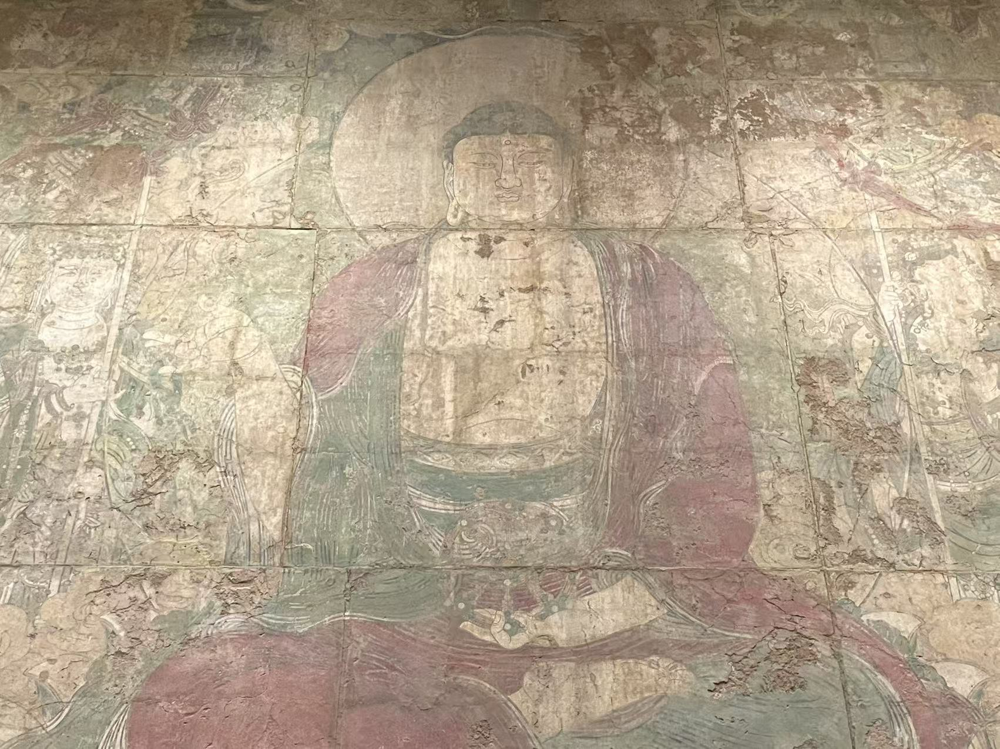
佚名 · 寺院壁画
元，14世纪初
纳尔逊－阿特金斯艺术博物馆
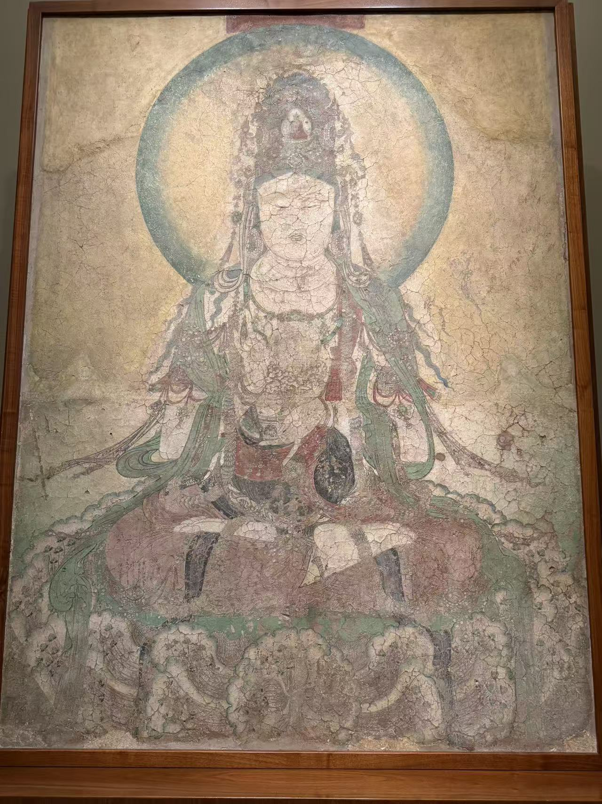
五代，后周广顺年间（951—953）
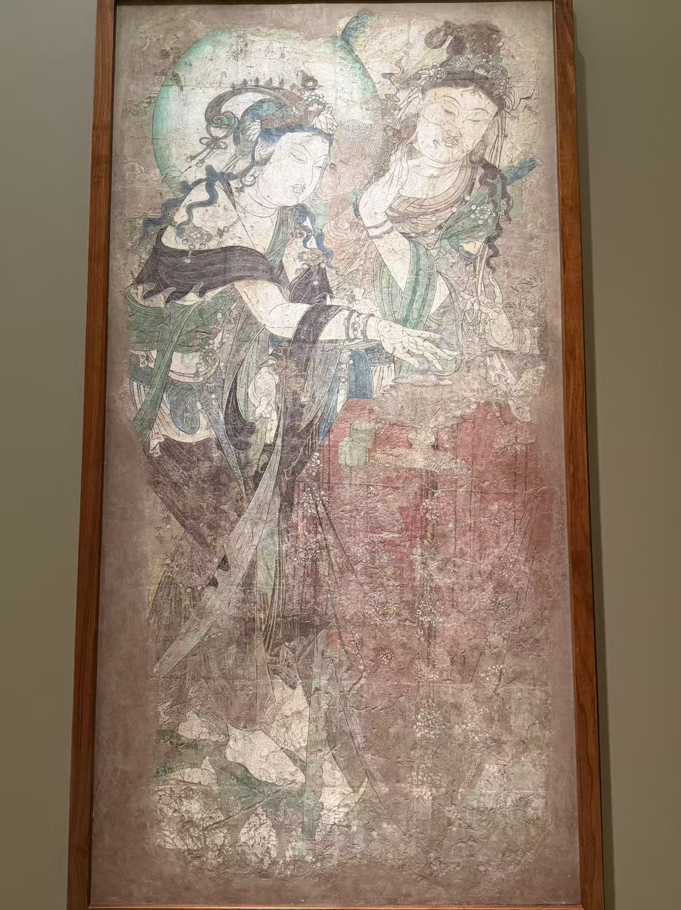
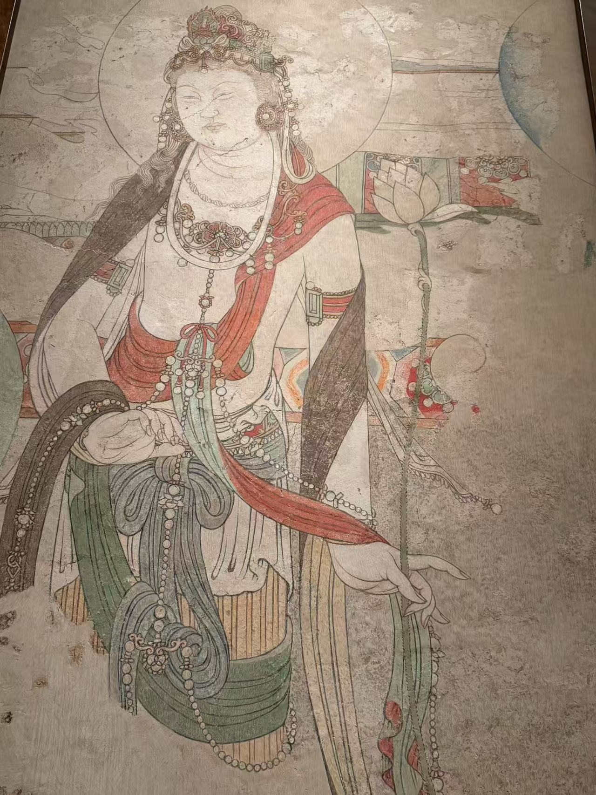
五代，后晋天福二年（937）
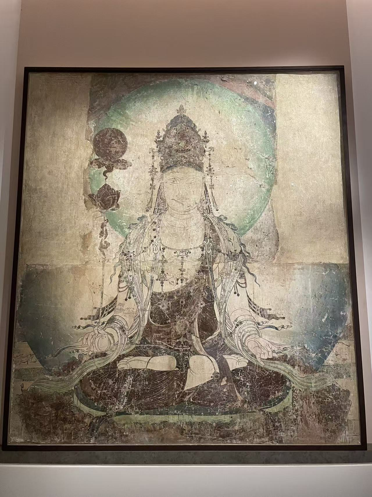
五代，10世纪
吉美亚洲艺术博物馆
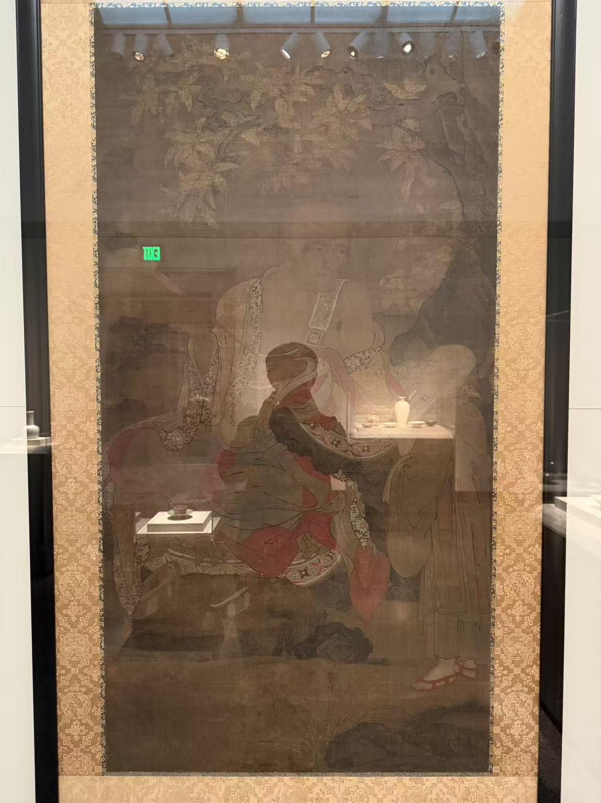
佚名 · 立轴
元至明初，14世纪
史密森尼国立亚洲艺术博物馆（弗利尔美术馆）
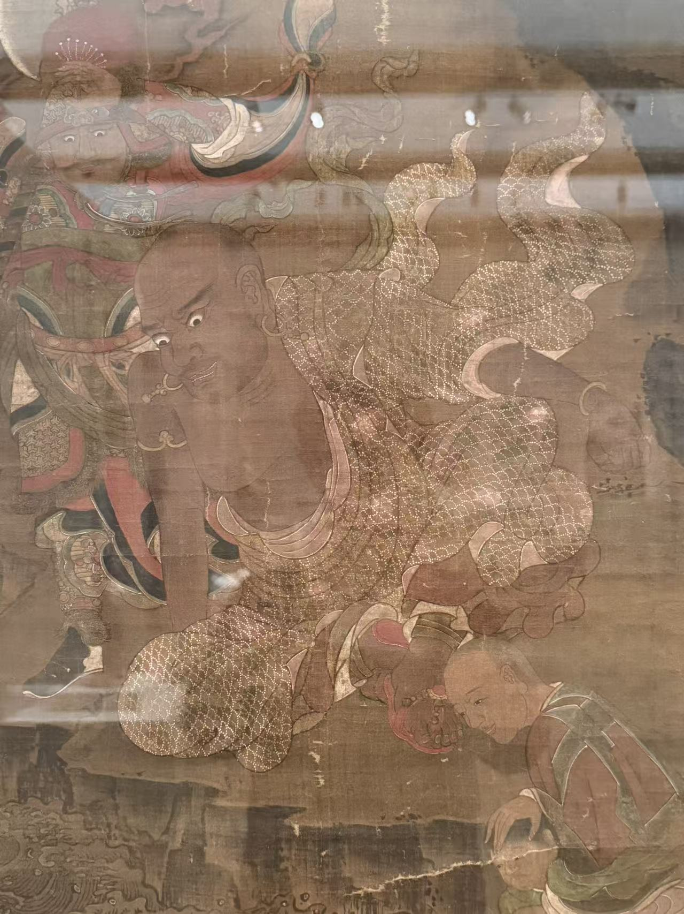
金贝尔艺术博物馆
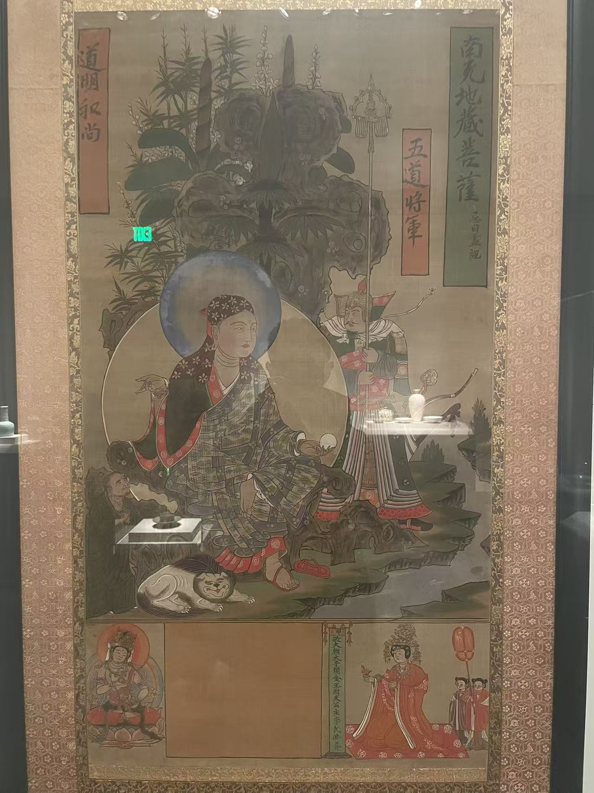
北宋，可能为11世纪初，亦可能为10世纪末
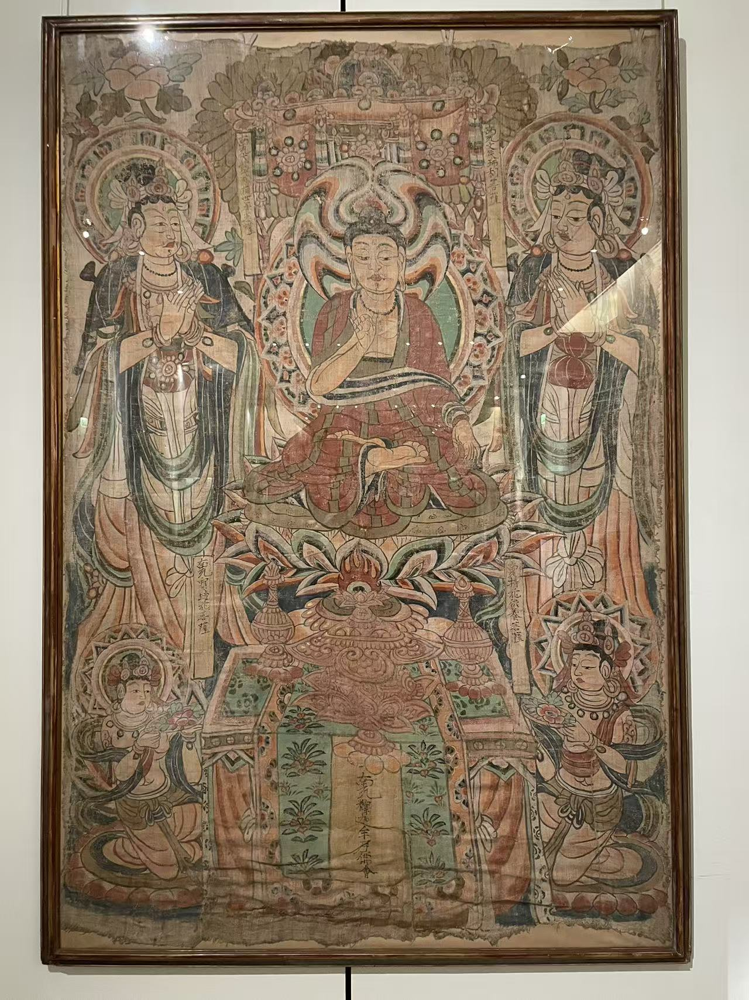
佚名 · 供养画
10世纪后半叶，北宋（据展签）
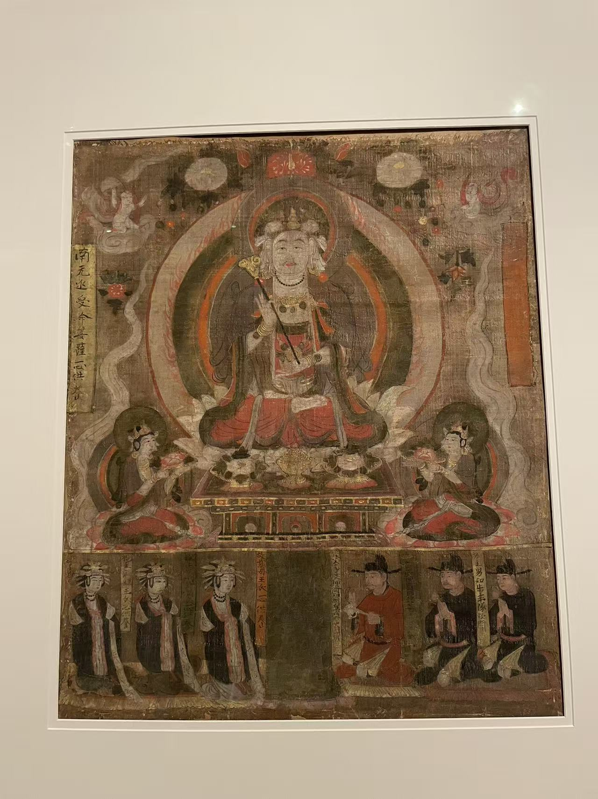
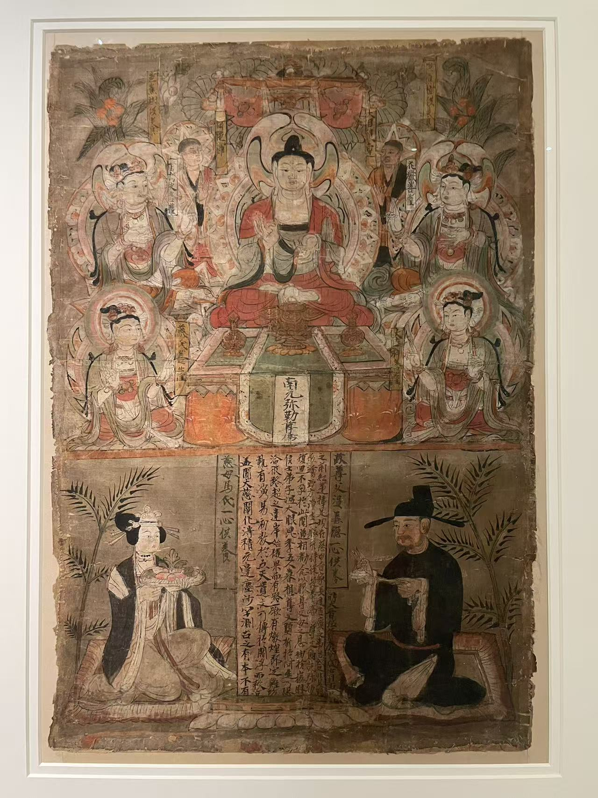
五代，后晋天福五年（940）
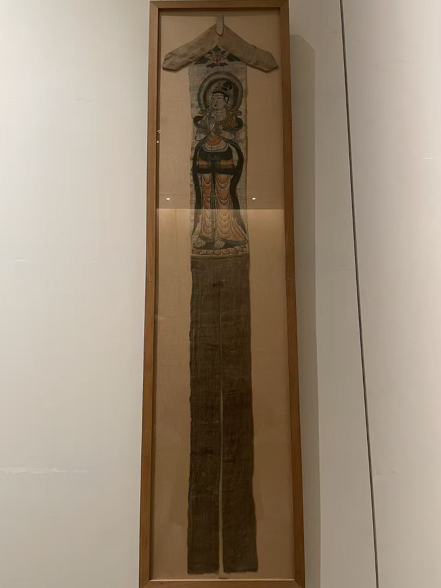
佚名 · 双面幡画
9或10世纪（？），唐至五代
佚名 · 幡画
唐，9世纪
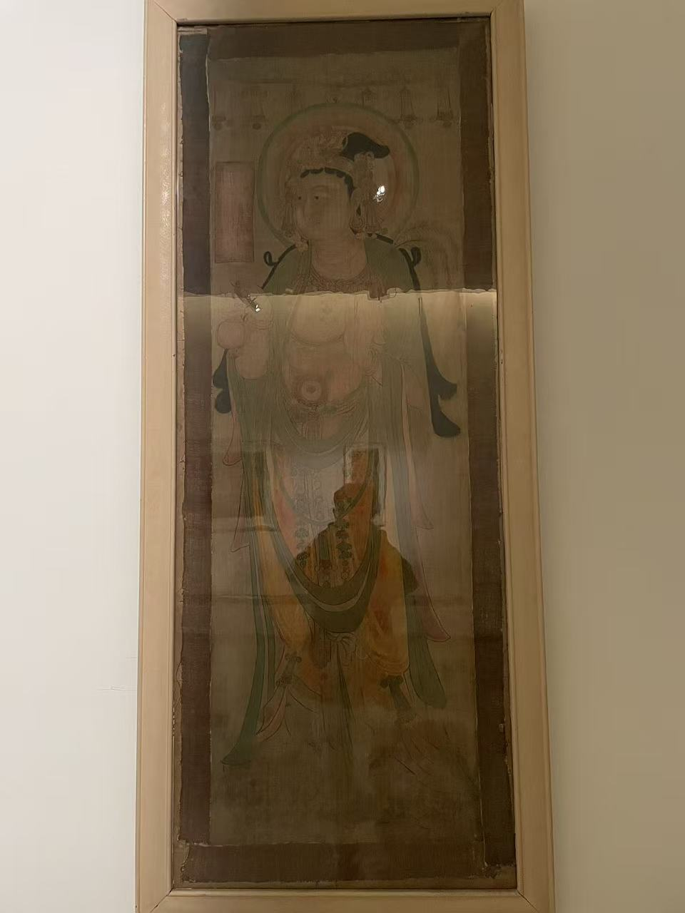
10世纪，五代或北宋